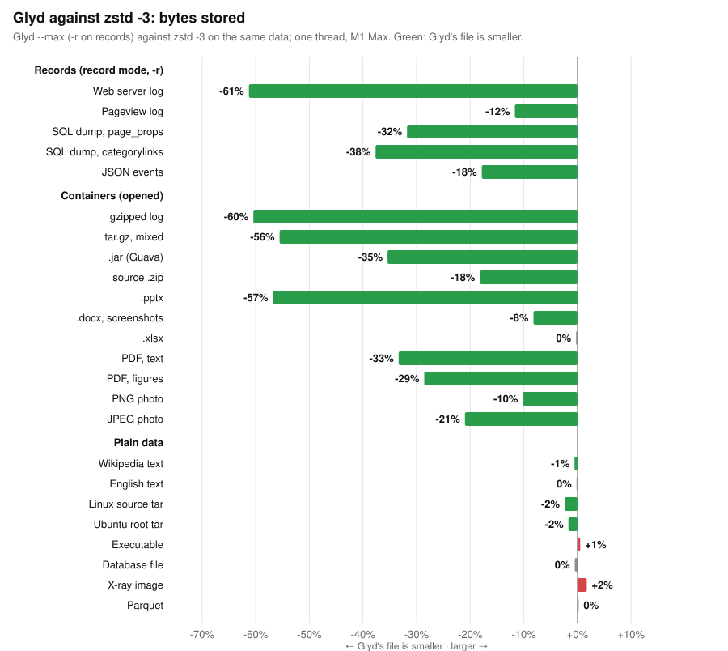
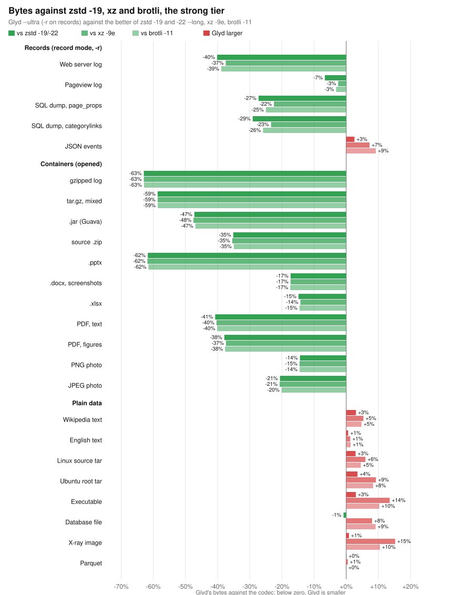
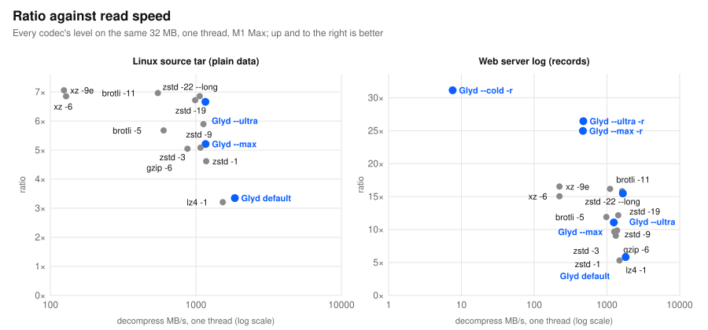

Glyd
A compression library and CLI (Rust, C ABI) for the data that fills object storage: logs, database exports, telemetry, JSON, and the versions of all of them. v0.13.1, September 2026. Every number below is measured on public data, every decode compared byte for byte with its input, and reproducible from the repository.
What would it save you? Quick startFastest or slowest? The table everyone uses
The 8.7 GB real-data corpus on AWS Graviton3, ratio · compress MB/s · decompress MB/s. One core, the way zstd's README reports it, then eight cores (Glyd's output decodes in parallel; a zstd or LZ4 frame decodes on one thread).
| One core | Ratio | Compress MB/s | Decompress MB/s |
|---|---|---|---|
| LZ4 | 2.72 | 504 | 1,394 |
| Glyd default | 2.82 | 332 | 3,309 |
| zstd -3 | 3.86 | 313 | 1,425 |
| Glyd --max | 3.98 | 233 | 1,571 |
| Eight cores | Ratio | Compress MB/s | Decompress MB/s |
|---|---|---|---|
| Glyd default | 2.82 | 2,143 | 22,707 |
| zstd -3 -T8 | 3.85 | 1,969 | 1,422 |
| Glyd --max | 3.94 | 1,512 | 10,413 |
| Glyd --max -r | 4.71 | 643 | 4,040 |
| LZ4 | 2.72 | 503 | 1,392 |
| zstd -19 -T8 | 4.66 | 13 | 1,326 |
| Glyd --ultra | 4.66 | 14.5 | 9,620 |
| Glyd --ultra -r | 5.22 | 20 | 3,927 |
Reads: Glyd is the fastest, 3–7× zstd on a server. Writes: Glyd is slower, 0.77× zstd -3 (record mode 0.33×); LZ4 is the write-speed king on one core. Size: Glyd is the smallest wherever the data has structure, and ties elsewhere.
Against gzip, zstd, xz and brotli on 24 kinds of data
Every codec's own CLI on one thread of an M1 Max, every decode compared byte for byte with its input (505 round trips, all exact). The percentages are Glyd's bytes against the other codec's on the same data: below zero, Glyd's file is smaller. Glyd runs --max and --ultra, with -r on logs and dumps. Method, every codec's speed and the raw rows, with lz4, bzip2, zpaq and JPEG XL as well.



Where Glyd leads: records (each field a typed column) and containers (the deflate or JPEG inside is opened, and re-created bit for bit on read). Where it does not: plain text and binaries at the strong settings, where xz, brotli -11 and zstd -22 are up to 15% smaller and read at 30–880 MB/s against --ultra's 500–1,600; and containers read at 1.5–20 MB/s on one thread, the cost of re-creating every deflate stream.
The store: compression across objects, not just inside them
Inside one object every codec sits on the same floor. The redundancy of object storage is between objects — builds, snapshots, dumps and releases that are near-copies of earlier ones. glyd-store bucket/ --put ... fingerprints each object, finds the stored object it most resembles, and keeps it as a delta when that pays; chains are capped at four, so a read is at most five decodes. Measured on a 39 GB bucket, each object arriving in order, every one read back and compared:
| Family | Raw | zstd -3, each object alone | Glyd store | Gain |
|---|---|---|---|---|
| Linux 6.10 releases (15) | 22.5 GB | 3,237 MB | 232 MB | 13.9× smaller |
| Ubuntu 24.04 cloud images (6 builds) | 6.6 GB | 1,880 MB | 361 MB | 5.2× |
| Wikipedia dumps (2 months, 3 tables) | 0.7 GB | 140 MB | 71 MB | 2.0× |
| GitHub events (12 hours) | 9.4 GB | 875 MB | 670 MB | 1.3× (nothing is a version of anything) |
| The bucket | 39.2 GB | 6,132 MB (6.4×) | 1,334 MB (29.4×) | 4.6× smaller |
Put runs at 620 MB/s end to end on ten cores, base rebuilt and delta written; delete, compact and verify are there. A petabyte of such data in S3 Standard: $43K a year with zstd -3, $9.4K with the store. Chunk-level dedup, the backup approach, gains 1–4× on the same pairs.
Base mode: a version stored for the change, not the whole
Most stored bytes are versions — nightly dumps, snapshots, images, source trees. glyd --base old new parses every 32 MB of the new version with the old one's matching region as history and writes a stream that decodes with the same base. Measured on consecutive versions of real objects against zstd 1.5.7's own --patch-from, same machine, every rebuild byte-exact:
| Old → new | zstd -3 --patch-from | zstd -19 --patch-from | Glyd --max --base | Glyd --ultra --base |
|---|---|---|---|---|
| Wikipedia page-table dumps, a month apart (108 MB) | 3.84 MB · 409 MB/s | 1.30 MB · 2 MB/s | 1.79 MB · 720 MB/s | 1.23 MB · 6 MB/s |
| Ubuntu 24.04 cloud root filesystem, builds 16 days apart (1.1 GB) | 8.82 MB · 654 MB/s | 5.61 MB · 39 MB/s | 5.33 MB · 1,590 MB/s | 4.60 MB · 11 MB/s |
| Linux 6.10 → 6.10.1 source tar (1.5 GB) | 3.26 MB · 560 MB/s | 2.58 MB · 30 MB/s | 3.03 MB · 1,700 MB/s | 2.04 MB · 3 MB/s |
Compressed alone those versions are 33, 287 and 200 MB: a version costs 1–5% of what it did. Against zstd's fast patch Glyd stores 1.1–2.1× less at 1.8–3× the speed; --ultra --base stores 5–21% less than zstd -19's patch on every pair, at the plain --ultra speed. Content is found wherever it moved in the old version (a coarse map of the base picks each unit's region). Chunk-level dedup, the backup approach, gains only 1–4× on the same pairs.
| 15 Linux 6.10 point releases (1.5 GB each) | Glyd --max --base | zstd -3 --patch-from | Stored one by one |
|---|---|---|---|
| each release against the one before it | 228 MB | 260 MB | 3,000 MB (Glyd --max) · 3,236 MB (zstd -3) |
| each release against 6.10 (any version is two reads) | 246 MB | 265 MB |
A step costs 1.8 MB, 0.12% of the tree; the delta against a base 14 releases old is 3.6 MB, so a series needs no rebasing. A terabyte of such trees in S3 Standard: $37 a year compressed one by one with --max ($40 with zstd -3), $2.8–3.0 with base mode ($3.2–3.3 with zstd's patch).
Record mode: the data's own structure, not just its bytes
Byte-level matching (zstd, LZ4, Glyd's own levels) is a plateau: on real data zstd -19, xz and Glyd --ultra land within a few percent of each other. The redundancy of a log, a dump or a telemetry export sits in the same field of every record. glyd -r detects delimited lines, SQL dumps and JSON lines, turns them into one typed stream per field (integer, decimal and date-time deltas, dictionaries with recency ranks, text), compresses those, and rebuilds the bytes exactly. Logs whose lines vary in shape take a template: the line's text with a hole where every token holding a digit was, and the tokens as typed columns keyed by template and slot. Anything else is left as it is.
| Telemetry, 128 MB slices (ratio, higher is smaller) | LZ4 | zstd -3 | zstd -19 | Glyd --max -r | Glyd --ultra -r |
|---|---|---|---|---|---|
| Alibaba cluster machine usage, CSV | 2.8 | 4.5 | 6.9 | 12.6 | 13.7 |
| the same rows as JSON lines | 8.3 | 15.7 | 28.7 | 54.6 | 58.9 |
| NOAA daily weather, CSV | 3.8 | 7.0 | 12.0 | 19.6 | 23.1 |
| the same rows as JSON lines | 10.5 | 18.7 | 31.6 | 47.0 | 58.0 |
| NYC taxi trips, CSV export | 3.3 | 5.6 | 8.4 | 8.9 | 9.4 |
2.5–3.5× fewer bytes than the fast tier (LZ4, zstd -3), 1.5–2× fewer than zstd -19, written at 340–690 MB/s on 10 cores.
| Application and system logs, 128 MB slices (loghub 2.0) | LZ4 | zstd -3 | zstd -19 | Glyd --max -r | Glyd --ultra -r |
|---|---|---|---|---|---|
| HDFS (Hadoop file system) | 5.6 | 10.4 | 16.0 | 22.0 | 27.5 |
| Spark (application logs) | 7.9 | 14.5 | 25.2 | 47.0 | 53.6 |
| BGL (supercomputer RAS log) | 6.1 | 11.0 | 22.4 | 15.9 | 28.9 |
| Android (system log) | 5.0 | 12.9 | 23.0 | 17.9 | 25.4 |
1.4–3.3× fewer bytes than zstd -3 and 1.1–2.1× fewer than zstd -19 with --ultra -r; --max -r writes at 260–460 MB/s and reads back at 1,200–1,400 MB/s. Sources and the script that fetches them: scripts/download_ext_corpus.sh.
The cold level: below the floor every LZ codec shares
On real data zstd -19, xz -9 and Glyd --ultra land within 5% of each other: that is the floor of byte matching. Context mixing — every bit predicted from many contexts at once and coded at the mixed probability, no parse — goes below it at 30–100× the CPU. glyd --cold is that level: eleven predictors with paq-style bit histories, two mixers, two SSE stages, 32 MB units coded in parallel at 1.2–1.3 MB/s per core each way. Measured on 64 MB slices against the strongest tools, every decode byte-checked:
| Data | zstd -19 | xz -9 | Glyd --ultra (-r) | zpaq -m5 | Glyd --cold (-r) | vs zstd -19 |
|---|---|---|---|---|---|---|
| GitHub Archive JSON events | 14.6 | 14.8 | 15.9 | 22.8 · 0.4 MB/s | 22.5 · 1.3 MB/s per core | 1.54× smaller |
| NASA access log | 15.7 | 15.4 | 26.4 | 31.7 · 0.3 MB/s | 31.1 · 1.2 MB/s per core | 1.98× smaller |
| enwiki page_props SQL dump | 6.2 | 6.4 | 8.6 | 11.1 · 0.4 MB/s | 11.6 · 1.2 MB/s per core | 1.87× smaller |
| webster (text, 41 MB) | 4.8 | 4.9 | 4.8 | 7.3 · 0.35 MB/s | 7.1 · 1.2 MB/s per core | 1.47× smaller |
| HDFS log, 128 MB (-r) | 16.0 | 27.5 | 33.7 | 2.1× smaller | ||
| Spark log, 128 MB (-r) | 25.2 | 53.6 | 65.2 | 2.6× smaller |
The zpaq -m5 class within 3% either way, at 3–4× its speed per core; reads cost what writes cost. A terabyte is about 210 core-hours each way ($8 on Graviton3); 1.5–2× fewer bytes than zstd -19 saves $3–5 a year per raw terabyte in S3 Standard-IA, so the level pays for data kept two years or more and read a few times at most, or moved more than it is read.
The 8.7 GB corpus on AWS (Graviton3 and Sapphire Rapids, 8 threads)
| Data | Glyd --max | Glyd --max -r | zstd -3 | Glyd --ultra | Glyd --ultra -r | zstd -19 |
|---|---|---|---|---|---|---|
| Whole corpus | 3.94 | 4.71 | 3.85 | 4.66 | 5.22 | 4.66 |
| JSON events (2.6 GB) | 13.7 | 13.7 | 10.5 | 16.7 | 16.7 | 15.1 |
| Access and pageview logs (1.3 GB) | 5.09 | 6.16 | 4.89 | 6.63 | 7.74 | 6.83 |
| SQL dumps (3.9 GB) | 4.88 | 8.13 | 4.97 | 6.99 | 10.1 | 7.10 |
| Parquet (1.0 GB, already compressed) | 1.01 | 1.01 | 1.01 | 1.02 | 1.02 | 1.02 |
| Compress MB/s, Graviton3 | 1,512 | 643 | 1,969 | 14.5 | 20 | 13 |
| Decompress MB/s, Graviton3 | 10,413 | 4,040 | 1,422 | 9,620 | 3,927 | 1,326 |
--max -r stores 18% less than zstd -3 and 1% less than zstd -19 while writing 50× faster than zstd -19; Glyd's output decodes in parallel, so with 8 cores it reads 3–7× faster than a zstd frame. JSON events are not record-shaped (their bytes are hashes, ids and free text); the 128 MB long-distance matcher in --max and --ultra is what wins there.
A terabyte in S3 for a year
Compressed once by the CLI, read back once a month in the region, S3 Standard at list price, instance CPU seconds at the on-demand price (Graviton3):
| Codec | Stored | Year 1, 1 read/month | 10 reads/month | 100 reads/month |
|---|---|---|---|---|
| Raw | 1.000 TB | $276 | $276 | $278 |
| Glyd --max -r | 0.212 TB | $61.7 | $82.4 | $289 |
| Glyd --max | 0.254 TB | $71.6 | $81.3 | $178 |
| zstd -3 | 0.260 TB | $73.3 | $84.1 | $191 |
| Glyd --ultra -r | 0.191 TB | $82.8 | $103 | $311 |
| Glyd --ultra | 0.214 TB | $99.7 | $110 | $210 |
| zstd -19 | 0.216 TB | $102 | $114 | $232 |
Where zstd still wins, plainly: a hundred CPU-billed reads a month of record-mode data (its reads spend 2× zstd's CPU rebuilding the columns), single-core compression speed (--max at 0.71–0.74× zstd -3, the long-distance pass being 40% of the time on JSON), small objects with dictionaries (1–3% larger, 1.4–2× slower per object), and data made of hashes.
How the numbers are made
- Correctness first: 106 tests, a million-mutation fuzz, files from every earlier release decoded unchanged, and
scripts/verify_roundtrip.shthrough the CLI on both machines with corrupted copies rejected or decoded exactly; base-mode streams refuse any other base. - Fair comparison: zstd -3, zstd -19 and LZ4 on the same machines and thread counts, each on its fastest API, buffers kept; compressed bytes include every codec's own framing.
- A real workflow: compress, upload to S3, download, decompress, sha256 every file, at list prices.
- The floors are stated: JSON API events are 20% hashes, 10% random ids and 30% free text once compressed; Parquet is already zstd inside. Neither moves. Where zstd wins — write speed, small objects per second, reads at very high read rates — is written down too.
Full report with every table · Design notes · Changelog
The codec is BSD-3-Clause or GPL-2.0 at your option (the same licenses as zstd); the store (glyd-store) is under the Business Source License 1.1. Contact: suryakoritala1324@gmail.com.